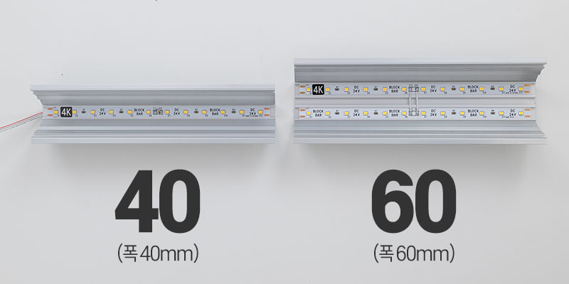

라인조명 & 블럭바 선택 가이드
호텔처럼 고급스러운 인테리어의 완성, 라인조명. 하지만 T5와 달리 별도의 SMPS(전원 공급 장치)가 필요하고 배선 설계가 중요합니다. 실패 없는 시공을 위한 핵심 정보를 안내해 드립니다.
1. 12V vs 24V 블럭바, 무엇이 다른가요?
블럭바(LED Strip)를 선택할 때 가장 많이 고민하는 부분입니다. 결론부터 말씀드리면, 설치 길이가 길다면 무조건 24V가 유리합니다.

전압 강하 (Voltage Drop)
전선에는 고유한 저항이 있습니다. 저전압(12V)일수록 전선을 타고 가면서 전압이 급격히 떨어집니다. 이로 인해 LED 바의 시작 부분은 밝고, 끝부분은 어두워지는 현상이 발생합니다.
- 12V: 보통 5m 이상 연속 연결 시 밝기 저하가 눈에 띕니다.
- 24V: 전압이 높아 10m 이상 연결해도 밝기가 균일하게 유지됩니다. 가정집 거실 우물천장 등 긴 구간 시공 시 배선이 훨씬 간편해집니다.
2. SMPS 용량 계산 (70% 룰)
LED 바의 총 소비전력이 100W라고 해서, 딱 100W짜리 SMPS를 쓰면 안 됩니다. SMPS는 전자기기이므로 100% 부하로 계속 작동하면 수명이 급격히 줄어들고 고장의 원인이 됩니다.
예: 100W 조명 설치 시 → 100 ÷ 0.7 = 약 142W → 150W 또는 200W SMPS 사용 권장
폴라베어 계산기는 이 '70% 안전율'을 자동으로 적용하여 최적의 SMPS 용량을 추천해 드립니다.
3. 알루미늄 프로파일과 방열
LED 칩은 빛을 낼 때 열을 발생시킵니다. 이 열이 제대로 식지 않으면 LED 수명이 짧아지고 밝기가 줄어듭니다. 블럭바나 줄조명을 부착할 때는 반드시 열을 흡수하고 배출해 줄 알루미늄 방열판(프로파일) 위에 부착해야 합니다.

매립 라인조명 계산기 바로가기 24V 블럭바 계산기 바로가기